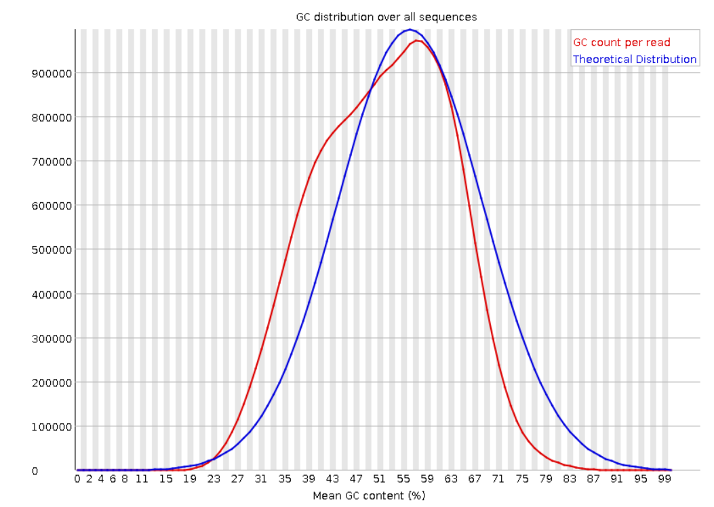

3 Quality Control and Preprocessing
Illumina
Quality Control
After sequencing, Quality control of the reads contained in the FASTQ files needs to be check, in order to determine if the reads could be used for further analysis. the main tools used for QC in Illumina reads are FASTQC and FASTQ-Screen.
FASTQC
Is a tool developed to check failures in the reads produced either by the sequencing machine or during library preparation. the extensions supported are:
FASTQ
Casava FASTQ files
Colorspace fastq
Gzip compressed FASTQ (.fastq.gz)
SAM
BAM
SAM/BAM Mapped only (normally used for colorspace data)
It is available for usage by CLI and GUI. It generates a html report for each file and its divided in the following Quality metrics modules:
Basic Statistics: Display the information related with the file, number and lenght of the sequences, and overall %GC.
2. Per base sequence quality: Shows how the quality score (y axis) varys throughout the sequence reads (x axis). For each position a BoxWhisker is displayed, the red line represents the median and the blue the mean. Commonly the quality score tend to decrease at the end of the reads, because the polymerase tends to make more mistakes as the read progresses.

Per tile sequence quality: Shows the quality score distribution for each tile in the flowcell.

4. Per sequence quality score: Shows the distribution of the quality scores for all the reads in the file. If a huge amount of reads subset have a poor average quality this could indicate a systematic problem.

5. Per base sequence content: Proportion of each base position for the four nucleotides. A strong bias in the nucleotide composition could indicate a problem in the library preparation.

Per sequence GC content: GC content distribution for all the reads in the file, and compared to a modelled normal distribution of human GC content (blue line).
Danger
If the GC content is not close to the normal distribution, or more than one peak is found, this could indicate a contamination or a problem in the library preparation. Also, depending on the organism the GC content could vary, so if possible it’s good to know the GC content of the organism of interest previously and avoid compare it with the human modelled distribution.
Per Base N content: If the sequencer is unable to determine the base in a position, it will be represented as an ‘N’. This section shows the distribution of Ns in the reads.

Duplicate Sequences: Shows the number of duplicated sequences in the file. a high level of duplication could indicate a enrichment bias (i.e. PCR amplification). Low level of duplication may indicate a very high level of coverage of the target sequence.
Overrepresented sequences: Show if a single sequence is very overrepresented in the file. This could indicate a contamination or a problem in the library preparation.
Adapter content: Shows the presence of adapter sequences in the reads. If there is presence of adapters, the reads should be trimmed before further analysis.

{kind=link}
{kind=link}
See also
For more information about FASTQC modules interpretation visit the FASTQC manual website.
FASTQ-Screen
Is a tool that checks if the reads are generated from the genome of the organism of interest, quantifying the proportion of reads that map to a reference genomes and also to a set of contaminants. In human sequencing data the standard reference genomes to check are:
Human
Mouse
Rat
Droshophila
Worm
Yeast
Arabidopsis
E.coli
Mitochondrial: in single nucleus RNA-seq is a good control of the nuclear isolation during the DNA extraction.
Also, other sources of contaminats could be checked:
PhiX: is a control used by Illumina to check the quality of the sequencing run (if the library is under or overloaded).
rRNA: in RNA-seq is a good control of rRNA depletion during library preparation.
Lambda
Vectors: to check that vectors used during library preprartion have not been amplified.
Adapters
Example of a FASTQ-Screen report:
Mapping result tables with the percentage of reads that map to each reference genome.

Mapping results tables values in a plot.

When working with several samples and reports, FASTQC and FASTQ-Screen reports could be aggregate in a unique report using “MULTIQC”” (https://multiqc.info/)
Pre-processing
After the quality control, in case adapter content or low quality bases are detected, the reads need to be pre-processed in order to get rid of them and improve quality of the reads for further analysis (as mapping).
Typical tools used for pre-processing are:
Trimmomatic <http://www.usadellab.org/cms/index.php?page=trimmomatic>
Cutadapt, only remove the adapaters (it needs to be used in combination with sickle), requires the adapter sequence to be known <https://cutadapt.readthedocs.io/en/stable/>
Sickle, remove low quality tail bases <https://github.com/najoshi/sickle>
Fastp performs in all one the following corrections:
Adapter removal: in paired-end data, fastp seeks the overlap of each pair and considers the bases that fall out of the
overlapped regions as adapter contents. Not need to specify the adapter sequence.
Base correction: for good quality overlapped sequences, quality differences are corrected if one of the bases has a higher score. Tipically base quality decrease towards the 3’ end of the read, poor quality tails are removed to leave only-high quality reads for aligment. sliding window method to drop the low-quality bases of each read’s head and tail. The window can slide from either 5′ to 3′ or from 3′ to 5′, and the average quality score within the window is evaluated. If the average quality is lower than a given threshold, then the bases in the window will be marked as discarded
Reads which are below a certain length are also removed.
Poly-G tails are recognised and removed (Sequencing error in the end of the read produced by some artifacts, such as Illumina and Novaseq, for the use of two colors to detect the four bases)
After preprocessing our reads, its important to check again the Quality. Fastp generates both htm and json report for asses the quality of our reads. The json reports could be aggregated with MULTIQC.
source: https://academic.oup.com/bioinformatics/article/34/17/i884/5093234
Example of fastp report.
Summary: General information about the reads, number of reads after filtering, number of bases avobe phred score 20 and 30, and number of reads that passed the filter, with low quality, too many N and too short.
Adapters: Sequence of the adapters found in the reads and the number of reads that contain them.
Insert size estimation: Distribution of the insert size of the reads. Insert size correpond to the size fragment overlapped by the paired-end reads, is the fragment of DNA that is sequenced and has
Quality per base, base contents and kmer counting before and after filtering
{kind=link}